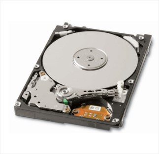
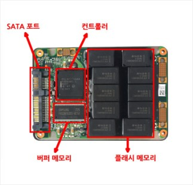
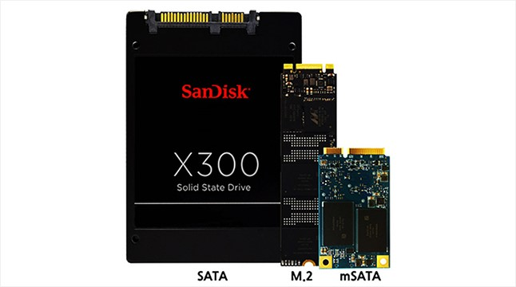

SSD
PC를 구성하고 있는 여러 가지 장치 중에서 가장 핵심적인 역할을 담당하고 있는 3가지 요소가 바로 CPU(중앙처리장치)와 램(주기억장치),
그리고 하드디스크(보조기억장치, Hard Disk Drive: HDD)다. 따라서 위 3개 장치의 성능이 곧 PC의 전반적인 성능을 좌우한다고 해도 과언이 아니다.
다만 CPU와 램의 동작 속도가 하루가 다르게 향상되고 있는 반면, HDD의 속도는 발전 속도가 훨씬 더딘 편이었다.
CPU나 램은 내부의 미세 회로 사이를 오가는 전자의 움직임 만으로 데이터 처리를 하는 반도체 재질이기 때문에
고속으로 동작이 가능하지만 HDD는 플래터(platter)라고 하는 자기디스크를 물리적으로 회전시키며 데이터를 읽거나 저장한다.
자기디스크를 아무리 빨리 회전시킨다 해도 반도체의 처리 속도는 따라갈 수 없다.
하드디스크의 한계를 극복하기 위해 등장한 SSD
문제는 이런 HDD의 느린 속도가 다른 장치들의 발목을 잡는다는 점이다. 아무리 CPU와 램이 빨라지더라도 이들에게 데이터를 공급하는 HDD의 속도가 느리다면 시스템의 전반적인 속도가 저하되는 것은 당연하다. 때문에 많은 업체들은 자기디스크의 회전속도를 높이거나 시스템과 HDD 사이를 연결하는 인터페이스(interface)의 데이터 전송 속도를 높이는 등, HDD의 속도를 높이기 위해 많은 노력을 해왔다. 다만, 그럼에도 불구하고 물리적인 디스크의 회전이 필요하다는 기본적인 동작 원리는 변함이 없기 때문에 HDD의 속도 향상에는 분명한 한계를 보이고 있었다. 게다가 디스크의 회전속도가 빨라질수록 소음이나 전력 소모량은 급속도로 높아진다.
이러한 이유 때문에 HDD를 대신할 대안으로서 제시된 것이 바로 ‘SSD(Solid State Drive)’다. SSD는 용도나 외관, 설치 방법 등은 HDD와 유사하지만 내부적으로 차이가 있는데, SSD는 HDD와 달리 자기디스크가 아닌 반도체를 이용해 데이터를 저장한다. 이러한 특성 덕분에 SSD는 HDD보다 빠른 속도로 데이터의 읽기나 쓰기가 가능하다. 그리고 물리적으로 움직이는 부품이 없기 때문에 작동 소음이 없으며 전력소모도 적다. 이런 특성 덕분에 휴대용 컴퓨터에 SSD를 사용하면 배터리 유지시간을 늘릴 수 있다는 이점이 있다.
 
자기디스크 보다 속도가 빠른 반도체 기반의 저장장치
SSD의 내부 구조는 시스템과 연결되는 인터페이스(연결 포트 등)와 데이터 저장용 메모리, 그리고 인터페이스와 메모리 사이의 데이터 교환 작업을 제어하는 컨트롤러(controller) 및 외부 장치와 SSD간의 처리 속도 차이를 줄여주는 버퍼(buffer)메모리로 구성되어 있다. 이 중에 주목해야 할 것이 데이터 저장용 메모리다. SSD 제품에 따라서 저장매체로 일반 램(RAM)을 탑재한 모델과 플래시메모리(flash memory)를 탑재한 모델로 나뉜다.
램 기반의 SSD는 매우 압도적인 속도를 발휘하는데, 이를 탑재한 PC는 전원을 켠 후 1~2초 만에 윈도우 운영체제의 부팅을 끝낼 수 있을 정도다. 다만, 램은 전원이 꺼지면 저장 데이터가 모두 사라지기 때문에 PC의 전원을 끈 상태에서도 SSD에 지속적으로 전원을 공급해주는 전용 배터리를 필수적으로 갖춰야 한다. 만약 PC가 꺼진 상태에서 SSD에 연결된 배터리마저 방전된다면 모든 데이터가 지워진다. 이런 단점 때문에 램 기반의 SSD는 그다지 쓰이지 않는다.
따라서 일반적인 SSD라고 한다면 플래시메모리 기반의 모델을 지칭한다. 플래시메모리는 전원이 꺼지더라도 기록된 데이터가 보존 되기 때문에 기존의 HDD와 같은 감각으로 사용이 가능하여 편리하다. 그리고 속도 면에서는 램 기반의 SSD에 비해 느리긴 하지만 HDD에 비하면 빠르다. 플래시메모리 기반의 SSD를 장착한 PC는 HDD를 장착한 동급 사양의 PC에 비해 최소 2~3배 이상 빠른 운영체제 부팅 속도나 프로그램 실행 속도를 기대할 수 있다.
플래시 메모리의 특성에 따른 SSD의 분류
플래시메모리 기반의 SSD도 내부에 탑재된 플래시 메모리의 종류에 따라 크게 2가지로 나뉜다. SLC(Single Level Cell) 방식과 MLC(Multi Level Cell) 방식이 그것인데, SLC 방식 플래시 메모리는 1개의 기억소자당 1비트의 데이터를 저장하며 MLC 방식은 1개의 기억소자당 2비트 이상의 데이터를 저장한다. SLC 방식이 안정성이나 내구성, 데이터 처리 속도가 우수하지만 가격은 같은 용량의 MLC 방식에 비해 가격이 2배 이상 비싸다.
SSD의 보급이 막 시작되던 2007년 전후에 나온 SSD 제품, 그 중에서도 MLC 방식의 SSD 중 상당수는 처리 속도가 상당히 느려서 HDD와 그다지 차이가 없다는 평을 듣기도 했다. 그래서 한때는 SSD를 사고자 한다면 비싼 가격을 감수하더라도 반드시 SLC 방식의 제품을 골라야 한다는 이야기가 돌기도 했다. 하지만 지속적인 기술 개발과 제품 개선이 이어지면서 2010년 전후부터 출시된 MLC 방식 SSD는 SLC 방식 제품에 크게 뒤지지 않는 처리 속도를 기대할 수 있다. 무엇보다 가격이 훨씬 저렴하다는 장점이 있어서 시중에 판매되는 대부분의 SSD는 MLC 방식이 주류를 이루게 되었다.
한편, MLC 방식의 파생형으로 TLC(Triple Level Cell) 방식도 있다. 이는 1개의 기억소자당 3비트의 데이터를 저장할 수 있다. 소자당 2비트 이상을 저장할 수 있으면 모두 MLC로 분류하는 것이 맞지만, 시장에서는 소자당 2비트를 저장하는 방식만 MLC, 3비트를 저장한다면 TLC라고 부르는 것이 관행으로 굳어졌다. TLC 방식의 플래시메모리를 탑재한 SSD는 2013년부터 본격 출시되기 시작했다. TLC는 기존의 MLC 방식 대비 수명이나 성능 면에서 불리하다는 지적이 있었고, 실제로 일부 제품은 사용시간 누적에 따른 성능 저하 이슈가 발생하기도 했다, 다만, 생산성 및 가격 경쟁력 면에서의 이점 때문에 향후 TLC 방식의 SSD는 한층 더 시장 점유율을 높일 것으로 보인다.
가격이 SSD 보급의 걸림돌
지금까지 설명한 것처럼 SSD는 기존 HDD의 단점을 대부분 개선했기 때문에 언젠가는 HDD를 대체하여 PC 보조저장장치의 표준이 될 것으로 기대되고 있다. 다만 문제는 가격이다. 2015년 현재, 256GB 용량의 SSD는 10만원대에 팔리고 있지만, 동일한 가격대에서 HDD는 3~4TB 용량의 제품도 살 수 있다. 저장장치는 속도뿐 아니라 용량도 중요하기 때문에 앞으로도 한동안 SSD와 HDD는 공존할 것으로 전망된다.
제품 형태 및 인터페이스에 따른 SSD의 분류
SSD는 제품의 형태 및 연결 인터페이스에 따라서 분류되기도 한다. 가장 많이 쓰이는 SATA 인터페이스 SSD의 경우, HDD와 마찬가지로 제품의 크기에 따라 노트북용 2.5인치, 데스크톱용 3.5인치 크기의 제품으로 나뉘는데, 2015년 현재는 2.5인치 크기의 제품이 시장의 주류를 이루고 있다. 2.5인치 크기의 SSD는 노트북뿐 아니라 데스크톱에도 설치가 가능하다. 그리고 보다 고성능을 요구하는 전문가용이나 기업용 컴퓨터에선 PCI 익스프레스(PCI Express)나 SAS(Serial attached SCSI) 인터페이스 기반의 SSD를 쓰기도 한다.

슬림형 노트북에서는 기존의 SATA SSD보다 크기가 작은 미니 SATA(mSATA) 규격 SSD나 미니 PCI 익스프레스(Mini PCI-E) 규격 SSD를 쓰는 경우도 있다. 일반 SATA와 mSATA 인터페이스를 함께 갖춘 노트북도 있는데, 이런 특성을 이용해 저용량의 mSATA SSD와 고용량의 SATA HDD를 한 대의 노트북에 동시에 장착, 속도와 용량을 동시에 만족시키기도 한다.

그 외에 기존 SATA(1.0 ~ 3.0 버전) 인터페이스보다 고성능을 낼 수 있는 SATA 익스프레스(SATA Express) 인터페이스, 그리고 M.2(NGFF, Next Generation Form Factor) 인터페이스 등을 지원하는 SSD도 있다. 다만, 일부 PC 메인보드에 달린 M.2 인터페이스는 기존 SATA와 같은 성능을 내기도 하므로 SSD 구매 전에 제조사에게 문의해 보는 것이 좋다.